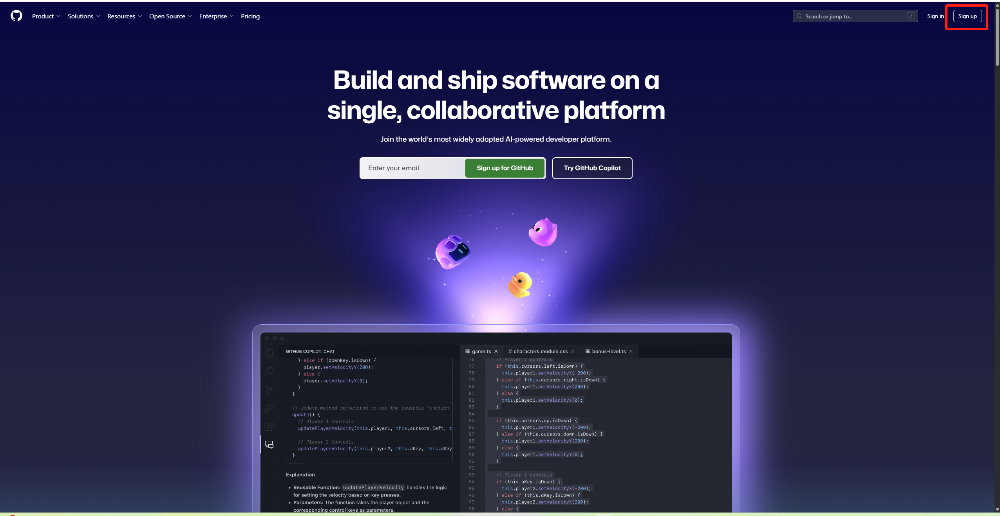
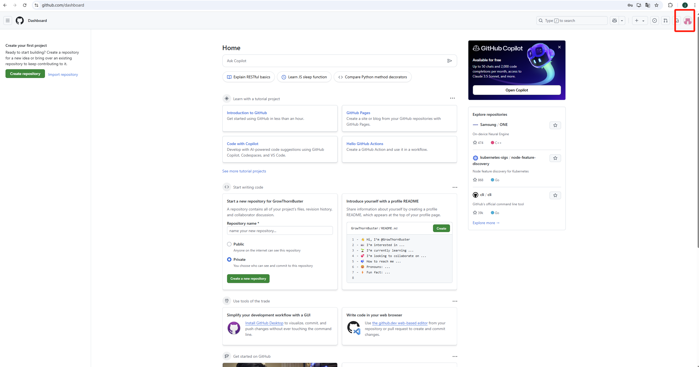
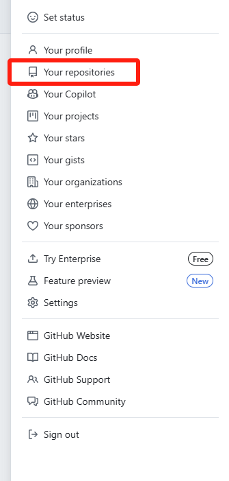
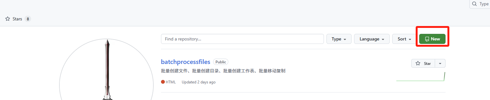
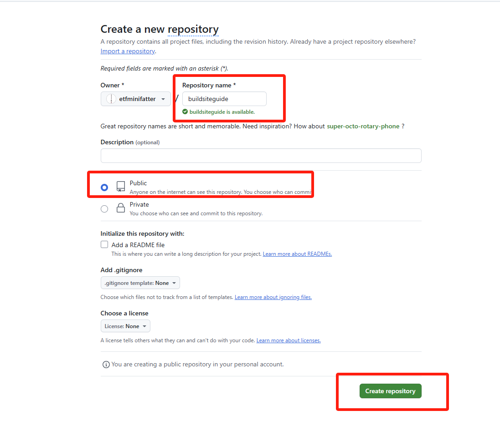
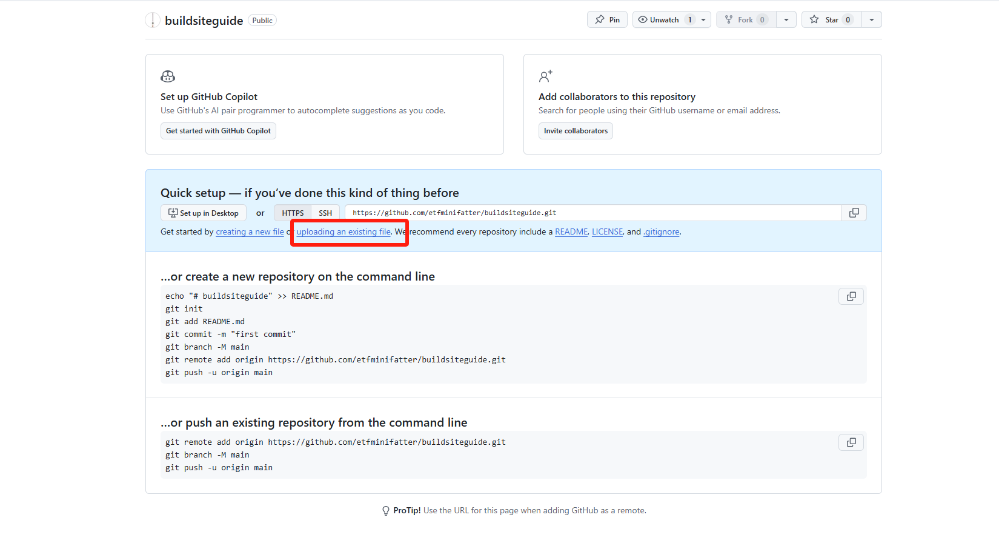

1 注册GitHub账号
首先，访问GitHub官网并创建一个免费账号。

GitHub注册页面
提示： 选择一个专业的用户名，因为它可能会出现在您的网站URL中。确保使用安全的密码并记录下来。
2 登录后的主页界面
注册并登录成功后，您将看到GitHub的主页界面。在右上角可以找到您的个人菜单。

GitHub主页界面，个人菜单位于右上角
3 进入仓库页面
点击界面顶部的"Repositories"（仓库）标签，进入您的仓库列表页面。

点击Repositories标签
提示： 仓库是存储代码的地方，相当于您项目的文件夹。每个网站通常对应一个单独的仓库。
4 创建新仓库
在仓库页面，点击绿色的"New"按钮创建一个新的仓库。

点击New按钮创建新仓库
5 填写仓库信息
为您的仓库填写名称和描述。如果您希望将此仓库用于GitHub Pages网站托管，命名为username.github.io（将username替换为您的GitHub用户名）会有特殊好处。

填写仓库名称和描述
提示： 确保勾选"Add a README file"选项，这将初始化您的仓库并使后续操作更简单。将仓库设为Public（公开）可以免费使用GitHub Pages功能。
6 创建仓库成功
点击"Create repository"按钮后，您的仓库将被创建。您将看到仓库的主页，其中包含README文件。

仓库创建成功页面
7 上传文件到仓库
在仓库页面，您可以点击"Add file"下拉菜单，选择"Upload files"来上传您的网站文件。

上传文件到仓库的界面
提示： 现在我们还没有网站文件可上传，这将在步骤3中使用Cursor生成代码后进行。您可以先记住这个操作位置，后续我们会回到这里。